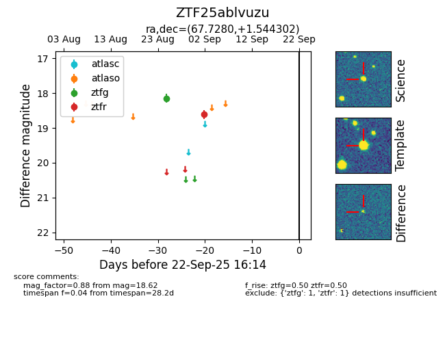

FINK: ZTF25ablvuzu
Lasair: ZTF25ablvuzu
ALeRCE: ZTF25ablvuzu
ZTF25ablvuzu (ztf,fink)
equatorial (ra, dec) = (67.7280,+1.54430)
galactic (l, b) = (193.6325,-29.97839)

last ztfg=18.15, ztfr=18.62
1 ztfg, 1 ztfr detections